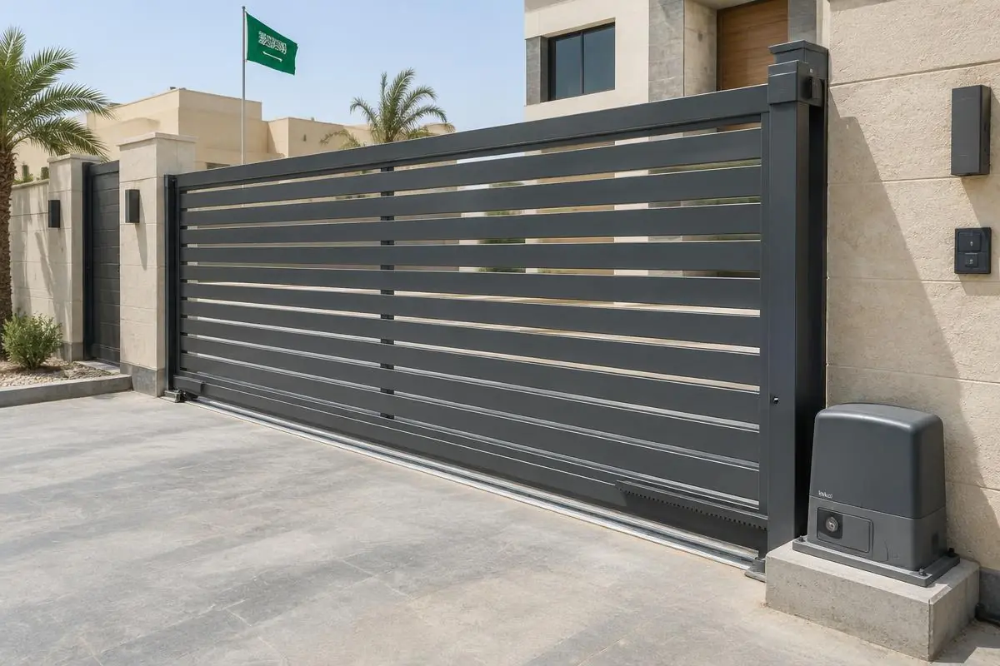
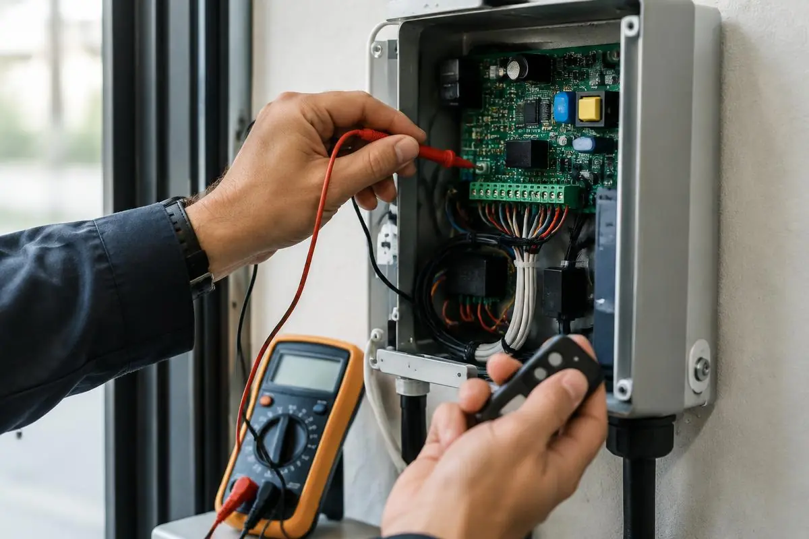

الباب السحاب يتوقف في منتصف الطريق
قد يكون السبب عائقاً على المسار أو حساساً مغطى أو ضبطاً خاطئاً لقوة المحرك.
تركيب محرك باب سحاب، وتركيب ذراع باب مفصلي Swing Gate Operator، وصيانة الأبواب الخارجية للفلل والمباني والاستراحات.

الأبواب السحاب خيار عملي لمداخل الفلل والمباني لأنها لا تحتاج مساحة للفتح للداخل أو للخارج. نقدم تركيب أبواب سحاب في خميس مشيط وأبها مع محرك سحاب مناسب لوزن الباب، ونقدم صيانة أبواب سحاب في المدينتين لمعالجة الأعطال الشائعة.

الأبواب المفصلية ذات الضلفة أو الضلفتين تعمل بأذرعة كهربائية تدفع الضلفة وتسحبها بانسيابية. نقدم تركيب ذراع باب مفصلي في خميس مشيط وأبها، مع اختيار موضع التثبيت الصحيح على العمود والضلفة حتى يعمل الباب بزاوية فتح مناسبة وبدون إجهاد للمفصلات.
كما نقدم صيانة ذراع الباب المفصلي عند ظهور أعطال مثل ضعف الدفع أو التوقف أو الصوت، أو عدم تزامن الضلفتين.

قد يكون السبب عائقاً على المسار أو حساساً مغطى أو ضبطاً خاطئاً لقوة المحرك.
غالباً بسبب تآكل ترس المحرك أو سوء محاذاة الجنزير المسنن.
نفحص المحرك والمكثف والتروس ونقاط التثبيت على الضلفة.
نعيد برمجة الريموت أو نصلح المستقبل في لوحة التحكم.
نقدم تركيب أبواب سحاب في خميس مشيط في أحياء مثل الموسى ومخطط الموسى والربيع والواحة والصقور والبوادي، وتركيب وصيانة أذرعة الأبواب المفصلية في أبها في أحياء مثل السروات والضباب والعرين والروابي والبديع.
اطلع على القائمة الكاملة لأحياء خميس مشيط وأبها التي نخدمها.
الباب السحاب ينزلق جانبياً على مسار أرضي بواسطة محرك وجنزير مسنن، وهو مناسب عندما لا تتوفر مساحة لفتح الضلفات. أما الباب المفصلي فيفتح على مفصلات مثل الباب العادي ويُشغّل بذراع كهربائي أو أكثر.
يعتمد الاختيار على وزن الباب وطوله وعدد مرات الاستخدام اليومية. نقيس الباب ونقترح المحرك بالقدرة المناسبة.
قد يكون أحد الأذرعة معطلاً أو مفصولاً كهربائياً، أو أن لوحة التحكم مبرمجة على فتح ضلفة واحدة. نفحص الأذرعة واللوحة ونعيد البرمجة أو الإصلاح.
نعم في أغلب الحالات، بشرط أن يكون الباب سليماً ومستوياً على مساره، ونضيف الجنزير المسنن والمحرك وحساسات الأمان.
نعم، نقدم تركيب ذراع باب مفصلي وصيانته في خميس مشيط وأبها.
تصفح بقية خدمات أبواب الممتاز في خميس مشيط وأبها.
تواصل معنا لمعاينة الباب واقتراح المحرك المناسب.